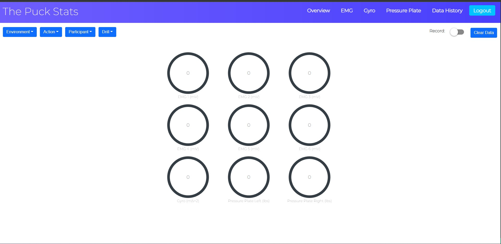
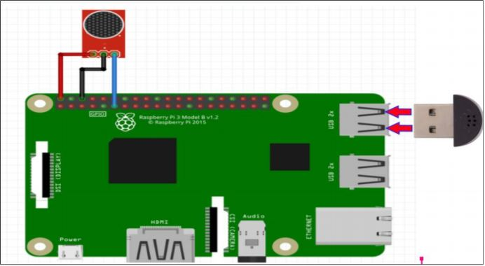
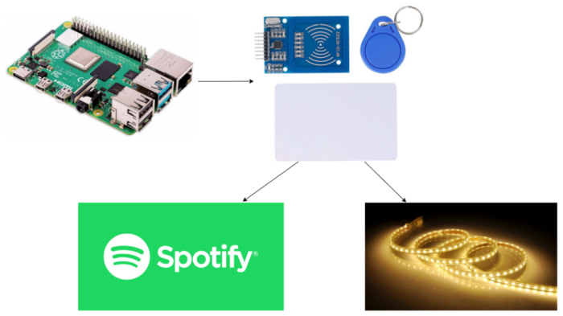
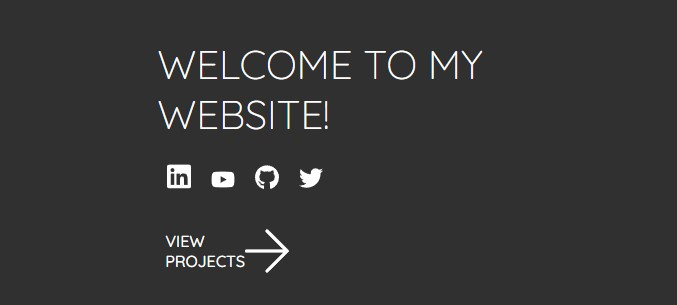
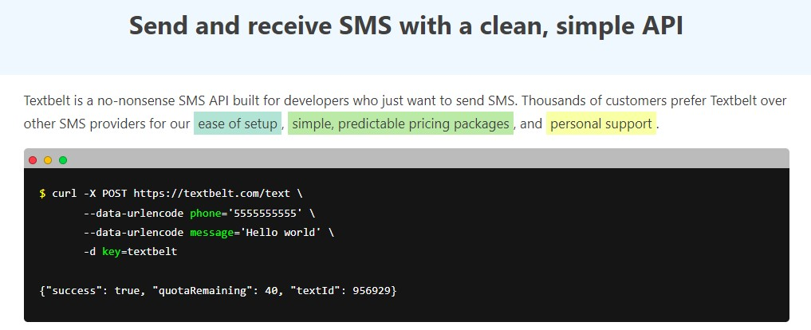
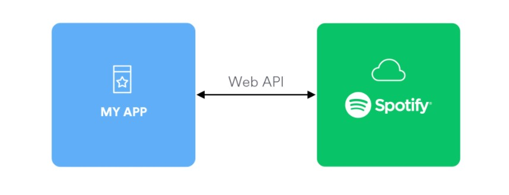

Senior Software Development Engineer | Ontario, Canada
Hi, I'm Braden Hayes.
I am Braden Hayes, a Senior Software Development Engineer at Thales working on the Luna Network HSM platform across secure systems, automation, release coordination, and platform delivery.
Outside of coding, I am big into sports and staying active. Skiing, swimming, hockey, soccer, golf, and getting out for hikes are a big part of who I am, and I like having that balance alongside the engineering side of my life.
About Me
A bit more about me.
My background is in systems engineering, and most of my work has been in environments where reliability matters. I enjoy building software that is practical, maintainable, and able to hold up in real production settings.
Beyond my professional work, I spend a lot of time on personal projects to keep learning and to try out ideas that interest me. A lot of them started from simple curiosity, whether that was building something with a Raspberry Pi, working with an API, or finding a way to automate something I cared about.
A lot of the projects on this site came from that mix of curiosity and practicality. Usually I start with something simple I want to learn, automate, or build for fun, then keep improving it until it turns into something worth sharing.
Outside of work
Skiing
Swimming
Hockey
Soccer
Golf
Hiking
Staying active helps me keep a good balance outside of work, and honestly a lot of my best ideas show up when I step away from a screen for a while.
Experience
Professional work across security, systems, and delivery.
Senior Software Development Engineer | Thales Group
Build security-critical software for the Luna Network HSM platform using C++ and Linux, with work spanning secure systems, client integration, and platform reliability.
- Designed and implemented a Bring Your Own Certificate capability for enterprise customers.
- Served as Release Champion across more than 100 engineers, 5 teams, and 3 countries.
- Built internal automation around release planning, ownership tracking, and coordination.
Software Development Engineer | Thales Group
Worked on next-generation HSM software using Python, C++, JavaScript, Docker, Yocto, and GitLab CI/CD while helping modernize the client and platform stack.
- Led development of the client connector for a next-generation HSM platform.
- Architected a Crypto Traffic Controller for stronger client-to-device communication.
- Developed cryptographic applications with OpenSSL and PKCS#11 APIs.
Full Stack Software Developer Intern | Transport Canada
Contributed to the Corporate Data Pathfinder using Vue.js, Node.js, GraphQL, SQL, and Docker while also expanding testing and security coverage.
- Implemented OWASP ZAP penetration testing in Azure DevOps pipelines.
- Designed K6 load testing for GraphQL APIs.
Projects
Projects I've built over the years.
A mix of software, automation, hardware, and personal projects that helped shape how I build.
2024 | Python, Google Sheets API, PyInstaller
Fantasy Football Stat Tracking Using Python and AWS
Crafted with Python and AWS, this automated system compiles detailed statistics for ESPN fantasy football leagues and goes beyond the default league views with richer analysis and standings information.
The goal was to make league data more useful and easier to act on, while also giving myself a deeper project around APIs, automation, and distribution.

2022 | Capstone
4th Year Undergraduate Capstone Project
For my fourth year capstone, my team compared roller hockey to ice hockey to see how similarly different muscles are activated across the two sports.
I built the software application used to visualize, record, sort, and store the incoming data in real time so the team could work with the results during testing and analysis.

Archive | Raspberry Pi, Python, sensors
Raspberry Pi Security System
Built a full security system across four Raspberry Pis with motion detection, a laser tripwire, sound sensing, timestamped recordings, and real-time video streaming.
My work focused on the audio section and server-side flow, including sound sensor logic, Dropbox uploads, and the desktop application that pulled data together for monitoring and playback.

Archive | Raspberry Pi, RFID
Raspberry Pi Room Controller Using RFID
Built this to explore the RFID RC522 and create a room controller for music, lights, and LEDs.
It was a fun hardware-heavy project and turned into a full write-up because it felt useful enough to document as a tutorial.

Archive | React, Spotify API
Spotify Song Contest Using React
I built this project to improve my React skills while making something fun. Using Spotify's API, users guess which of two songs is more popular.
It was one of the projects that helped me get more comfortable building interactive frontend experiences around external APIs.

Archive | Raspberry Pi, APIs
DIY Goal Light Using a Raspberry Pi
I built this to improve my API skills and make something fun for hockey. The setup flashes my lights when my favorite NHL team scores.
It combined live sports data with home automation and ended up being one of the more satisfying small builds I put together.

Archive to present | Personal site
My Website
I decided it was time to build a website for myself to show my work, my projects, and a bit of my life outside of work.
As my frontend skills improved, the site changed with them. It started with plain HTML and CSS, then evolved through other approaches as I learned more on the job and in school.

Archive | Python, Textbelt API
Automatic Text Sender
A simple Python script with a scheduler that sends a text message every morning at 6 AM using the Textbelt API.
It was a small project, but a fun one, and the kind of thing that works perfectly on a Raspberry Pi running in the background.

Archive | Python, Spotify API
Spotify Playlist Generator
Built using Spotify for Developers, this script creates a new playlist every time Release Radar refreshes and copies the songs into a dated playlist.
The point was to preserve each week's discoveries instead of losing them when Release Radar updated again the next Friday.
Education
Formal learning and ongoing skill building.
University of Ottawa
Master of Interdisciplinary Artificial Intelligence | September 2025 - Present
Carleton University
B.Eng., Systems and Computer Engineering | September 2018 - May 2022
Certifications
Professional Scrum Master I and II, Professional Scrum Product Owner I and II
Stay Connected